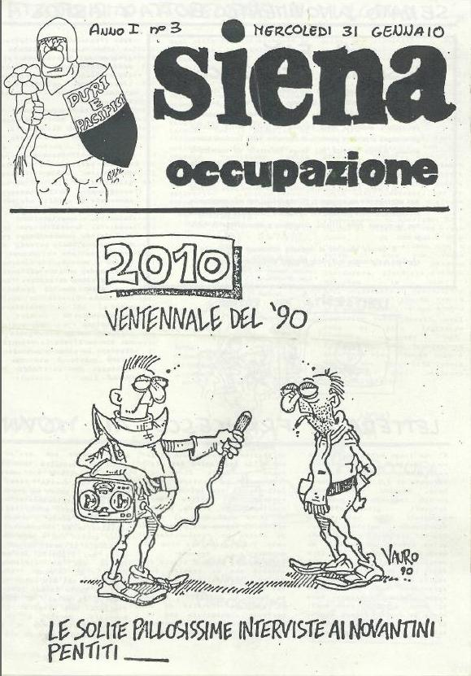

|
|
Viva La Pantera!
All science fiction is destined to become alternate history:

This is an issue of the newspaper of the 1990 student takeover of the university of Siena. I was there studying Italian, a junior "semester abroad", as was the custom of the time.
In response to privatizing reforms announced by the national education minister, students took over universities across the country in protest, played their guitars, served spaghetti dinners, and provided their own alternative curriculum. The University of Siena is mostly housed in what was once a Franciscan monastery, and we kids from the Universitá per Stranieri would go down there and partake. (It was awfully hospitable of them to schedule something so thrilling, educational, and Italian for us while we were there). It was also as if a chain of free squatters' hotels had opened up across Italy: I remember travelling to Florence and sleeping on the floor of an occupied classroom there.
The cartoon depicts the twentieth anniversary of that revolution... which is, of course, today. (The caption says "Twentieth anniversary of the [Occupation of] '90: the usual pain-in-the ass interviews with the repentant 90ers")
So, about science fiction:
See those awesome shoulder flanges on the reporter?
That's how we dress now.
See his big-ass reel-to-reel tape recorder?
That's how we record interviews!
Posted by benrosen at January 31, 2010 02:25 PM | Up to blogBut what's that thing between the tape deck and the microphone? A cable of some kind?
Thanks,
-V.
ma sono passati veramente 20 anni?
non eravano noi,noi stiamo solo osservando e leggendo quello che altri hanno fotografato o scritto.Solo il presente è reale.Già quello che è accaduto ieri non è dimostrabile sia esistito realmente...